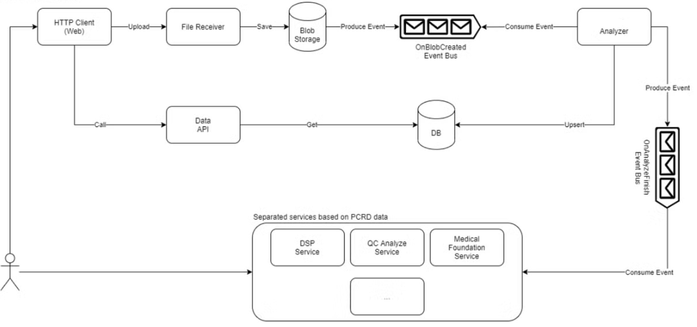
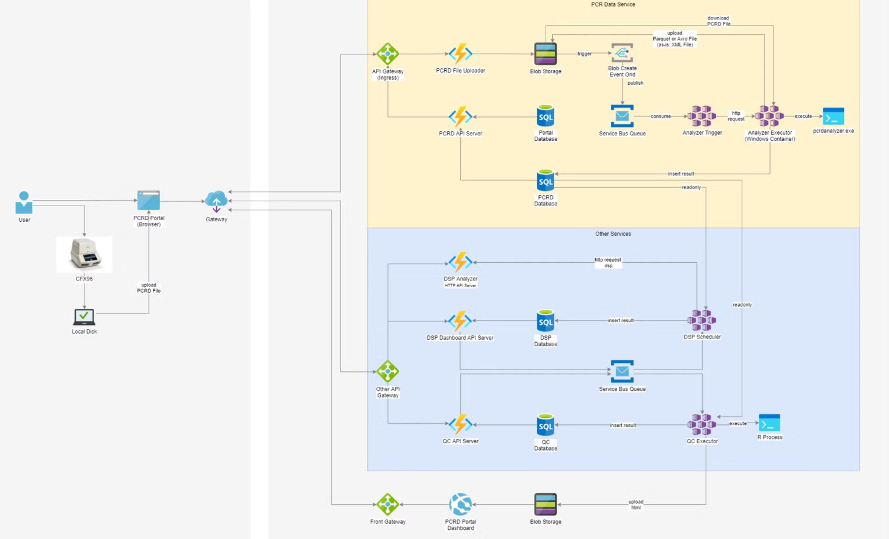

1 Data Architecure
- 데이터 아키텍처는 조직의 데이터 자산을 효과적으로 수집, 저장, 관리, 사용하기 위한 전체적인 구조와 계획을 의미한다.
- 이는 비즈니스 요구사항, 기술적 구현, 데이터 거버넌스를 연결하는 청사진 역할을 한다.
1.1 주요 구성 요소
- 데이터 모델링: 데이터 엔티티, 관계, 속성 정의
- 개념적 데이터 모델 (Conceptual Data Model)
- 논리적 데이터 모델 (Logical Data Model)
- 물리적 데이터 모델 (Physical Data Model)
- 데이터 흐름
- 데이터의 생성, 이동, 변환, 저장, 소비 과정 정의
- ETL(Extract, Transform, Load) 프로세스 설계
- 데이터 저장소
- 데이터베이스, 데이터 레이크, 데이터 웨어하우스, 데이터 마트 등의 구조 설계
- 데이터 저장 방식 (온프레미스, 클라우드, 하이브리드 등)
- 메타데이터 관리
- 데이터에 대한 데이터(메타데이터) 관리 방식 정의
- 데이터 사전, 데이터 용어 사전, 데이터 카탈로그, 비즈니스 용어집 등 포함
- 데이터 통합
- 다양한 소스의 데이터를 통합하는 방식 정의
- 마스터 데이터 관리(MDM) 전략 포함
- 데이터 보안 및 프라이버시
- 데이터 접근 제어, 암호화, 마스킹 등의 보안 정책
- 개인정보 보호 규정 준수 방안
- 데이터 품질 관리
- 데이터 품질 측정 및 개선 프로세스 정의
- 데이터 클렌징, 검증 방법론
- 데이터 거버넌스 프레임워크
- 데이터 관리에 대한 정책, 절차, 책임 정의
- 데이터 스튜어드십 모델
- 기술 스택
- 데이터 관리 및 분석을 위한 기술 솔루션 선정
1.2 Data Architecture vs Data Structgure
종종 Data Architecture 한글로 데이터 구조관리라 번역되는데 Data Structgure와 혼동하지 말자.
Data Structure
- 데이터 요소들을 조직화하고 저장하는 특정 방식을 의미하며 주로 프로그래밍과 데이터베이스 설계 수준에서 사용되는 개념이다.
- 예: 배열, 리스트, 트리, 그래프, 테이블 등을 말하며 주로 개별 애플리케이션이나 데이터베이스 수준에 초점을 맞춘다.
Data Architecture
- 조직의 데이터 자산을 관리하기 위한 전체적인 구조와 모델을 의미하고 비즈니스 요구사항과 IT 전략을 연결하는 청사진 역할을 한다.
- 데이터의 수집, 저장, 변환, 분배, 사용에 관한 전체적인 계획을 포함한다. (주로 그림이 많이 들어감)
- 데이터 모델, 데이터 흐름, 통합 지점, 보안 정책 등을 포함합니다. (주로 그림이 많이 들어감)
- 데이터 아키텍트, 비즈니스 분석가, IT 전략가가 주로 다룬다.
- 범위: 조직 전체의 데이터 환경을 대상으로 하고 비즈니스 목표, 규제 요구사항, 기술 인프라를 모두 고려한다.
- 예시


주요 차이점
- 범위
- Data Structure: 특정 데이터셋이나 애플리케이션에 국한됨
- Data Architecture: 조직 전체의 데이터 환경을 다룸
- 목적
- Data Structure: 효율적인 데이터 저장 및 접근을 위한 기술적 설계
- Data Architecture: 전략적 데이터 관리 및 활용을 위한 전체적인 프레임워크
- 관점
- Data Structure: 주로 기술적, 구현 중심적 관점
- Data Architecture: 비즈니스와 기술을 연결하는 전략적 관점
- 포함 요소
- Data Structure: 데이터 유형, 관계, 제약조건 등
- Data Architecture: 데이터 모델, 메타데이터, 데이터 흐름, 거버넌스 정책 등
- 사용자
- Data Structure: 주로 개발자, DBA
- Data Architecture: 데이터 아키텍트, 비즈니스 분석가, IT 전략가, 경영진